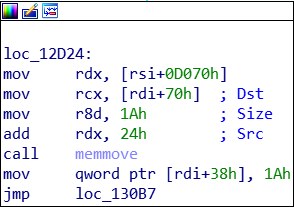
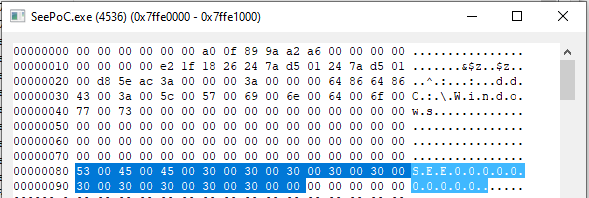

SoftEther VPN is a VPN program by the university of Tsukba in Japan. Users can use the client program to connect to servers, or use theserver program to host servers. The Server Manager for Windows used a driver named See.sys for low level operations. This driver was actually part of SoftEther's github repository which can be found here: See.sys Source
The driver is based off the old WinPcap driver which had an issue (CVE-2007-3681) with "malfourmed IRP Parameters" More Details
When a user program sends an IOCTL to a driver it is packaged, along with buffers, sizes, and other information inside of an IRP. IRPs have a field that named UserBuffer. This is the output buffer in a DeviceIoControl call. When a device is created with DO_DIRECT_IO (as this one does) there is no Irp->AssociatedIrp.SystemBuffer, so output data is usually copied to the UserBuffer.
The issue is that no checks are preformed on the UserBuffer by the IO Manager. Obviously, a ProbeForWrite could be used on IRP.UserBuffer, but the programmers of WinPcap didn't. The WinPcap driver had this issue fixed quite a while ago, but the See.sys driver, based on the WinPcap driver, was forgotten.
In See.sys, there is an IOCTL (0x1CF7) which calls memmove with a destination on IRP.UserBuffer (rdi+70H) The source ends up being the the wide string "SEEXXXXXXXXXX" where the X's are digits associated with the event name (according to the source) The size is a constant 0x1A.

While the data isn't fully controllable, the destination is. This is the critical issue in this driver. Because you can write this string anywhere in kernel memory, it is possible to overwrite some bit fields and gain elevated priviliges. In my PoC, the call writes the string to the K_USER_SHARED_DATA memory region at offset + 0x80.
This issue was reported and is fixed in the new versions (4.3+). SoftEther Notice Special thanks to Daiyuu Nobori of the SoftEther team. It was assigned CVE-2019-11868. The PoC code is available on my github here: Github Link